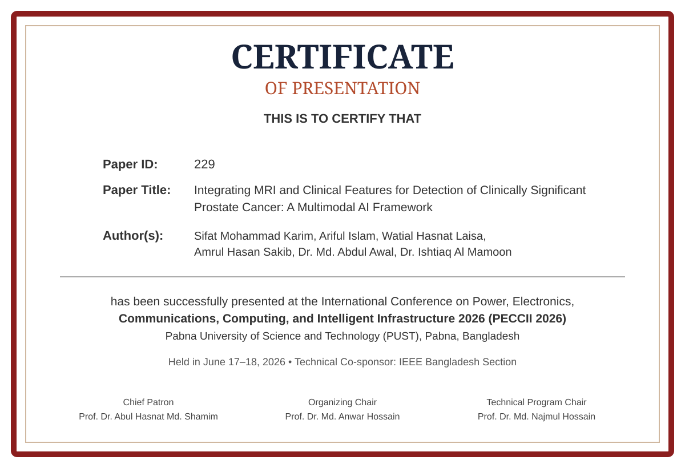

Md. Amrul
Hasan Sakib
Building practical software solutions with ASP.NET Core, Flutter, and AI/ML technologies, with published research in multimodal AI.

Software-focused & research-driven
A final-year Computer Science & Engineering student building web and mobile software while exploring applied AI and machine learning.
What I work on
My primary software interests are ASP.NET Core/.NET and Flutter. I also work with Python and machine learning, especially computer vision and multimodal AI research.
I enjoy turning ideas into clean, useful applications and improving my engineering skills through projects and research.
Technical toolkit
Languages
Frameworks
AI & Tools
Selected software work
Projects focused on practical web, mobile and AI-powered solutions.
BDTechMarket
An ASP.NET Core MVC web application built as a practical software project for a technology marketplace experience.
Flutter Application
A mobile application project built with Flutter for cross-platform software development.
GreenMind AI — Smart Plant Care
An AI-powered smart plant care application developed to provide practical and intelligent support for plant care.
Published multimodal AI research
Undergraduate research presented at PECCII 2026 and published on IEEE Xplore.
Integrating MRI and Clinical Features for Detection of Clinically Significant Prostate Cancer: A Multimodal AI Framework
Multimodal AI research combining MRI imaging and clinical features for the detection of clinically significant prostate cancer.

Certificate of Presentation · PECCII 2026Academic background
B.Sc. in Computer Science & Engineering
Coursework and project work centered on software development, with AI/ML and computer vision through undergraduate research.
Higher Secondary Certificate (HSC)
Secondary School Certificate (SSC)
Let's connect
Open to software development internships and collaboration on practical software or AI/ML research.